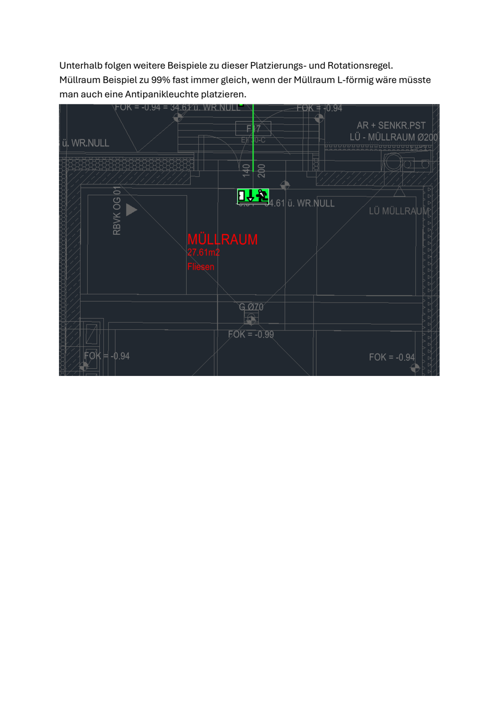
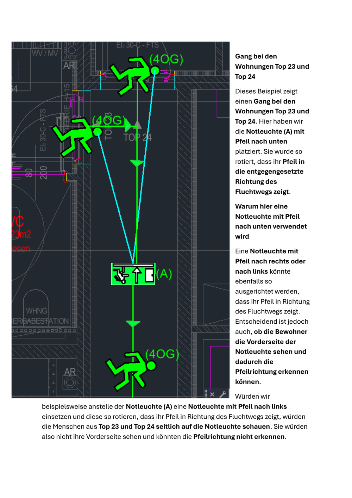
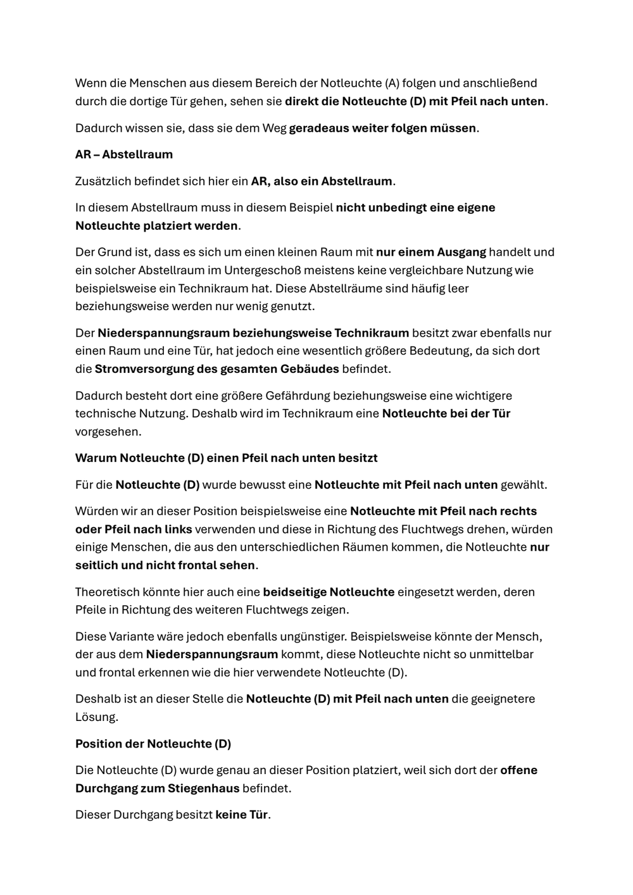
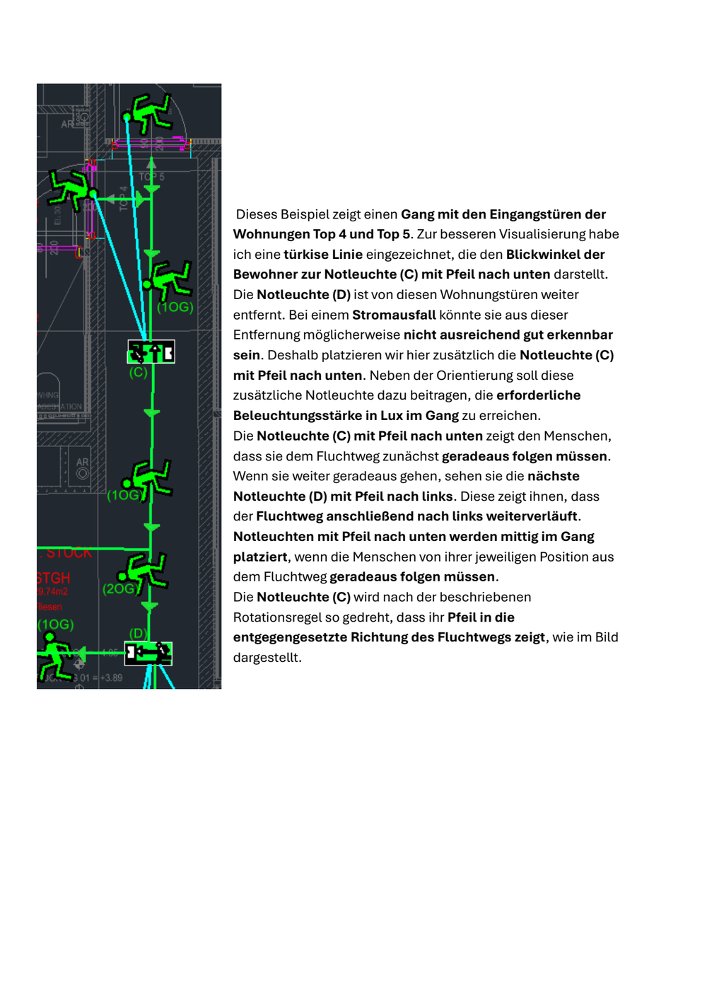
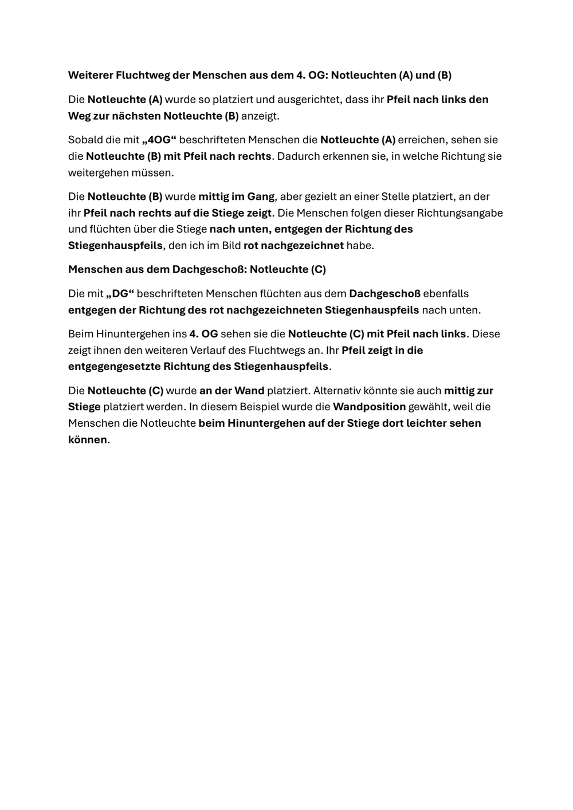
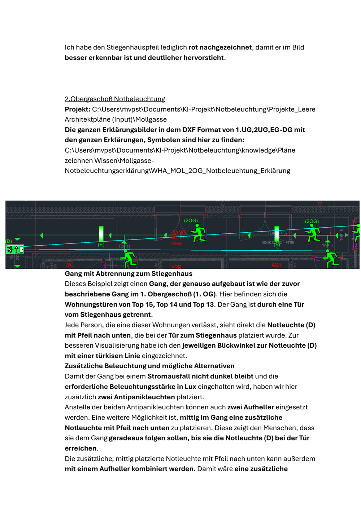
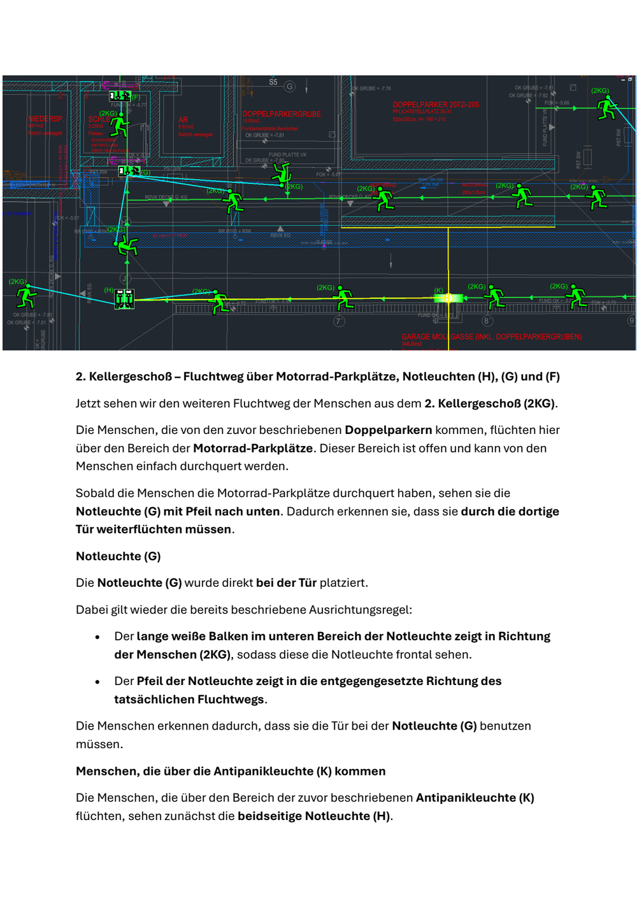

Alle 5 Fälle haben dieselbe Wurzel: Die Engine wählt den Pfeiltyp nach dem Fluchtweg-Vektor („wohin läuft der Weg?"), du wählst ihn nach der Frontalsicht der ankommenden Person („was sieht sie — und erkennt sie die Vorderseite?"). Bei Türen und geraden Gängen fällt beides zusammen (darum stimmen dort die Treffer) — an Sammelpunkten, Podesten und Zwischen-RZ fällt es auseinander.






| Befund | Bedeutung | Gegenmaßnahme |
|---|---|---|
| 40/40 bestätigt | Deine Lehrbeispiele sind geometrisch wasserdicht — jeder adversariale Widerlegungs-Versuch scheiterte an den DXF-Messwerten. (2 aussortierte Fälle waren Fehler unserer Finder, nicht deiner Pläne.) | — (Qualität der Referenz belegt) |
| 31× nichts | Zündkette reißt VOR der Platzierung (Raumtyp/Tür/Zirkulation). Das Regel-Wissen dahinter ist da — inkl. deiner Vorbehalte (L-Form-Guard!). Die Engine rät nicht (fail-closed = deine „nie raten"-Regel). | Phase M4 / Selman S-KG (übergeben) + Naht-Fixes |
| 5× Falsch-Variante | EINE gemeinsame Wurzel: Typ-/Positionswahl nach Weg-Vektor statt nach Frontalsicht der Person. Genau die Fehlerklasse, die deine S.31–36 als Lehrstück durchdekliniert. | Phase M3 (+ M2 Podest) — jetzt mit 5 mm-genauen Handle-Testfällen: 413A0 · 1C64B · 952E8 · 41220 · 852B7/8 |
| 3× richtig | Wo die Ketten durchgehen, trifft die Engine sogar deine ABWÄGUNGEN (Verzicht bei Sichtverbindung, Mach/Lass am Medienraum, Wand-oder-Mitte). | als Regressions-Anker einfrieren |